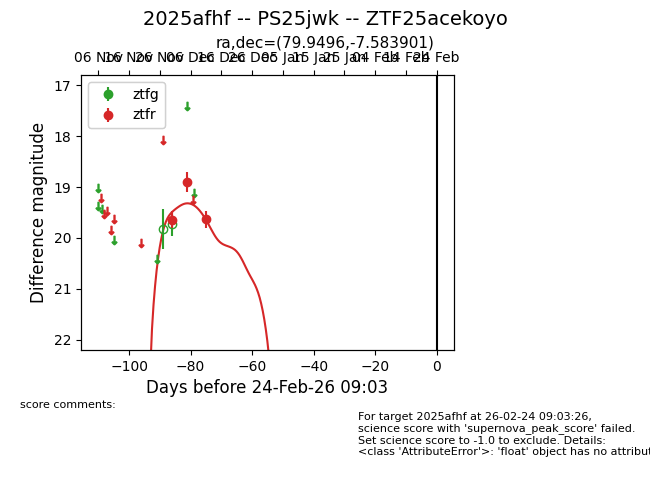
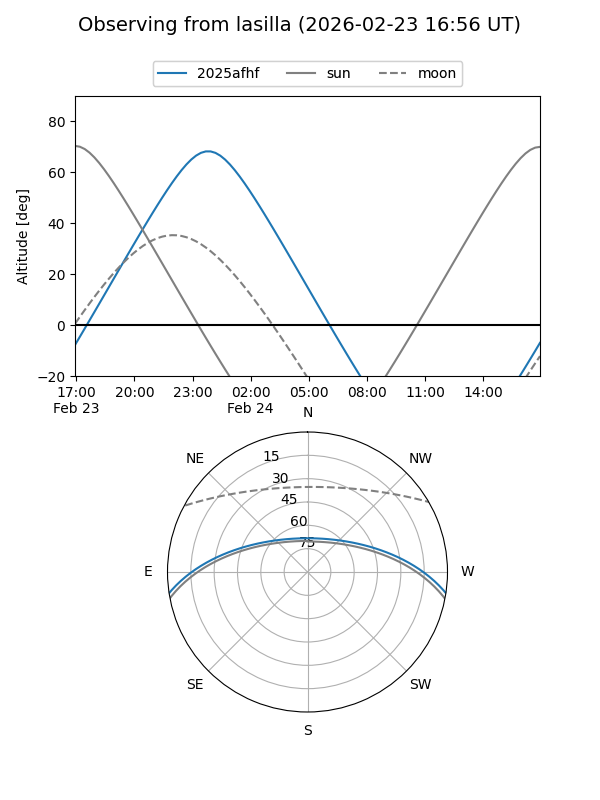
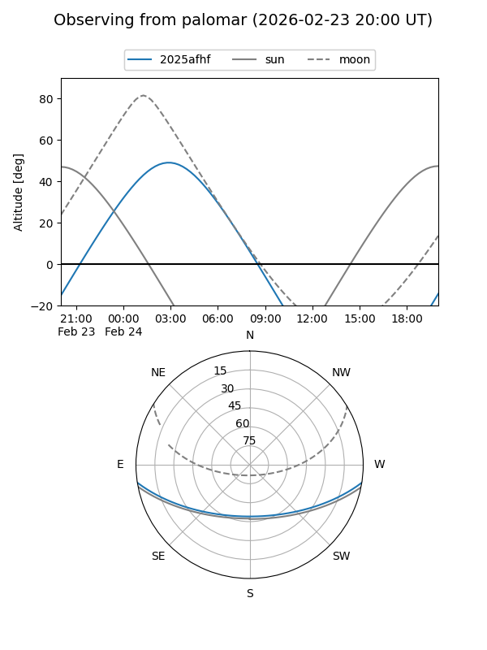
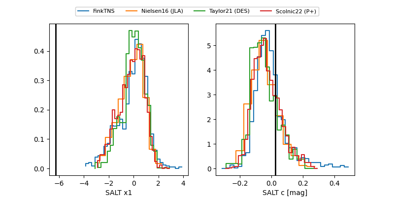

2025afhf
Target 2025afhf at 2025-12-30 08:41
Aliases and brokers:
FINK: fink-portal.org/ZTF25acekoyo
Lasair: lasair-ztf.lsst.ac.uk/objects/ZTF25acekoyo
ALeRCE: alerce.online/object/ZTF25acekoyo
TNS: wis-tns.org/object/2025afhf
YSE: ziggy.ucolick.org/yse/transient_detail/2025afhf
alt names
ZTF25acekoyo (ztf,fink_ztf)
2025afhf (tns,yse)
PS25jwk (panstarrs)
Coordinates:
equatorial (ra, dec) = 79.9496,-7.58390
equatorial (HMS+DMS) = 05:19:47.91,-07:35:02.04
galactic (l, b) = (209.2663,-23.80380)
Flags:
Photometry:
last ztfr=19.63
3 ztfr detections
Lightcurve

Visibility


Additional plots
